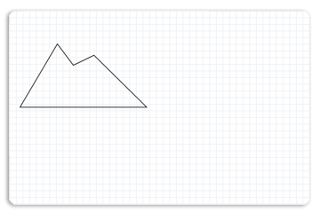
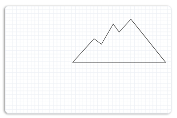
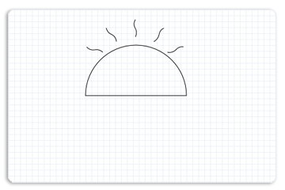
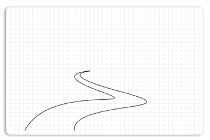

This topic describes how to use Direct2D path geometries to create complex drawings. It contains the following sections.
This overview assumes that you are familiar with creating basic Direct2D applications, as described in Create a simple Direct2D application. It also assumes that you are familiar with the basic features of Direct2D geometries, as described in the Geometries Overview.
Path geometries are represented by the ID2D1PathGeometry interface. To instantiate a path geometry, call the ID2D1Factory::CreatePathGeometry method. These objects can be used to describe complex geometric figures composed of segments such as arcs, curves, and lines. To populate a path geometry with figures and segments, call the Open method to retrieve an ID2D1GeometrySink and use the geometry sink's methods to add figures and segments to the path geometry.
ID2D1GeometrySink describes a geometric path that can contain lines, arcs, cubic Bezier curves, and quadratic Bezier curves.
A geometry sink consists of one or more figures. Each figure is made up of one or more line, curve, or arc segments. To create a figure, call the BeginFigure method, passing in the figure's starting point, and then use its Add methods (such as AddLine and AddBezier) to add segments. When you are finished adding segments, call the EndFigure method. You can repeat this sequence to create additional figures. When you are finished creating figures, call the Close method.
The following illustration shows a complex drawing with lines, arcs, and Bezier curves. The code example that follows shows how to create the drawing by using four path geometry objects, one for the left mountain, one for the right mountain, one for the river, and one for the sun with flares.
The example first creates a path geometry for the left mountain as shown in the following illustration.

To create the left mountain, the example calls the ID2D1Factory::CreatePathGeometry method to create an ID2D1PathGeometry.
hr = m_pD2DFactory->CreatePathGeometry(&m_pLeftMountainGeometry);
The example then uses the Open method to obtain a geometry sink from an ID2D1PathGeometry and stores it in the pSink variable.
ID2D1GeometrySink *pSink = NULL;
hr = m_pLeftMountainGeometry->Open(&pSink);
The example then calls BeginFigure, passing in D2D1_FIGURE_BEGIN_FILLED that indicates this figure is filled, then calls AddLines, passing in an array of D2D1_POINT_2F points, (267, 177), (236, 192), (212, 160), (156, 255) and (346, 255).
The following code shows how to do this.
pSink->SetFillMode(D2D1_FILL_MODE_WINDING);
pSink->BeginFigure(
D2D1::Point2F(346,255),
D2D1_FIGURE_BEGIN_FILLED
);
D2D1_POINT_2F points[5] = {
D2D1::Point2F(267, 177),
D2D1::Point2F(236, 192),
D2D1::Point2F(212, 160),
D2D1::Point2F(156, 255),
D2D1::Point2F(346, 255),
};
pSink->AddLines(points, ARRAYSIZE(points));
pSink->EndFigure(D2D1_FIGURE_END_CLOSED);
The example then creates another path geometry for the right mountain with points (481, 146), (449, 181), (433, 159), (401, 214), (381, 199), (323, 263), and (575, 263). The following illustration shows how the right mountain is displayed.

The following code shows how to do this.
hr = m_pD2DFactory->CreatePathGeometry(&m_pRightMountainGeometry);
if(SUCCEEDED(hr))
{
ID2D1GeometrySink *pSink = NULL;
hr = m_pRightMountainGeometry->Open(&pSink);
if (SUCCEEDED(hr))
{
pSink->SetFillMode(D2D1_FILL_MODE_WINDING);
pSink->BeginFigure(
D2D1::Point2F(575,263),
D2D1_FIGURE_BEGIN_FILLED
);
D2D1_POINT_2F points[] = {
D2D1::Point2F(481, 146),
D2D1::Point2F(449, 181),
D2D1::Point2F(433, 159),
D2D1::Point2F(401, 214),
D2D1::Point2F(381, 199),
D2D1::Point2F(323, 263),
D2D1::Point2F(575, 263)
};
pSink->AddLines(points, ARRAYSIZE(points));
pSink->EndFigure(D2D1_FIGURE_END_CLOSED);
}
hr = pSink->Close();
SafeRelease(&pSink);
}
The example then populates another path geometry for the sun as shown in the following illustration.

To do this, the path geometry creates a sink, and adds a figure for the arc and a figure for each flare to the sink. By repeating the sequence of BeginFigure, its Add (such as AddBezier) methods, and EndFigure, multiple figures are added to the sink.
The following code shows how to do this.
hr = m_pD2DFactory->CreatePathGeometry(&m_pSunGeometry);
if(SUCCEEDED(hr))
{
ID2D1GeometrySink *pSink = NULL;
hr = m_pSunGeometry->Open(&pSink);
if (SUCCEEDED(hr))
{
pSink->SetFillMode(D2D1_FILL_MODE_WINDING);
pSink->BeginFigure(
D2D1::Point2F(270, 255),
D2D1_FIGURE_BEGIN_FILLED
);
pSink->AddArc(
D2D1::ArcSegment(
D2D1::Point2F(440, 255), // end point
D2D1::SizeF(85, 85),
0.0f, // rotation angle
D2D1_SWEEP_DIRECTION_CLOCKWISE,
D2D1_ARC_SIZE_SMALL
));
pSink->EndFigure(D2D1_FIGURE_END_CLOSED);
pSink->BeginFigure(
D2D1::Point2F(299, 182),
D2D1_FIGURE_BEGIN_HOLLOW
);
pSink->AddBezier(
D2D1::BezierSegment(
D2D1::Point2F(299, 182),
D2D1::Point2F(294, 176),
D2D1::Point2F(285, 178)
));
pSink->AddBezier(
D2D1::BezierSegment(
D2D1::Point2F(276, 179),
D2D1::Point2F(272, 173),
D2D1::Point2F(272, 173)
));
pSink->EndFigure(D2D1_FIGURE_END_OPEN);
pSink->BeginFigure(
D2D1::Point2F(354, 156),
D2D1_FIGURE_BEGIN_HOLLOW
);
pSink->AddBezier(
D2D1::BezierSegment(
D2D1::Point2F(354, 156),
D2D1::Point2F(358, 149),
D2D1::Point2F(354, 142)
));
pSink->AddBezier(
D2D1::BezierSegment(
D2D1::Point2F(349, 134),
D2D1::Point2F(354, 127),
D2D1::Point2F(354, 127)
));
pSink->EndFigure(D2D1_FIGURE_END_OPEN);
pSink->BeginFigure(
D2D1::Point2F(322,164),
D2D1_FIGURE_BEGIN_HOLLOW
);
pSink->AddBezier(
D2D1::BezierSegment(
D2D1::Point2F(322, 164),
D2D1::Point2F(322, 156),
D2D1::Point2F(314, 152)
));
pSink->AddBezier(
D2D1::BezierSegment(
D2D1::Point2F(306, 149),
D2D1::Point2F(305, 141),
D2D1::Point2F(305, 141)
));
pSink->EndFigure(D2D1_FIGURE_END_OPEN);
pSink->BeginFigure(
D2D1::Point2F(385, 164),
D2D1_FIGURE_BEGIN_HOLLOW
);
pSink->AddBezier(
D2D1::BezierSegment(
D2D1::Point2F(385,164),
D2D1::Point2F(392,161),
D2D1::Point2F(394,152)
));
pSink->AddBezier(
D2D1::BezierSegment(
D2D1::Point2F(395,144),
D2D1::Point2F(402,141),
D2D1::Point2F(402,142)
));
pSink->EndFigure(D2D1_FIGURE_END_OPEN);
pSink->BeginFigure(
D2D1::Point2F(408,182),
D2D1_FIGURE_BEGIN_HOLLOW
);
pSink->AddBezier(
D2D1::BezierSegment(
D2D1::Point2F(408,182),
D2D1::Point2F(416,184),
D2D1::Point2F(422,178)
));
pSink->AddBezier(
D2D1::BezierSegment(
D2D1::Point2F(428,171),
D2D1::Point2F(435,173),
D2D1::Point2F(435,173)
));
pSink->EndFigure(D2D1_FIGURE_END_OPEN);
}
hr = pSink->Close();
SafeRelease(&pSink);
}
The example then creates another geometry path for the river that contains Bezier curves. The following illustration shows how the river is displayed.

The following code shows how to do this.
hr = m_pD2DFactory->CreatePathGeometry(&m_pRiverGeometry);
if(SUCCEEDED(hr))
{
ID2D1GeometrySink *pSink = NULL;
hr = m_pRiverGeometry->Open(&pSink);
if (SUCCEEDED(hr))
{
pSink->SetFillMode(D2D1_FILL_MODE_WINDING);
pSink->BeginFigure(
D2D1::Point2F(183, 392),
D2D1_FIGURE_BEGIN_FILLED
);
pSink->AddBezier(
D2D1::BezierSegment(
D2D1::Point2F(238, 284),
D2D1::Point2F(472, 345),
D2D1::Point2F(356, 303)
));
pSink->AddBezier(
D2D1::BezierSegment(
D2D1::Point2F(237, 261),
D2D1::Point2F(333, 256),
D2D1::Point2F(333, 256)
));
pSink->AddBezier(
D2D1::BezierSegment(
D2D1::Point2F(335, 257),
D2D1::Point2F(241, 261),
D2D1::Point2F(411, 306)
));
pSink->AddBezier(
D2D1::BezierSegment(
D2D1::Point2F(574, 350),
D2D1::Point2F(288, 324),
D2D1::Point2F(296, 392)
));
pSink->EndFigure(D2D1_FIGURE_END_OPEN);
}
The following code shows how to render the populated path geometries on the display. It first draws and paints the sun geometry, next the left mountain geometry, then the river geometry, and finally the right mountain geometry.
m_pRenderTarget->BeginDraw();
m_pRenderTarget->SetTransform(D2D1::Matrix3x2F::Identity());
m_pRenderTarget->Clear(D2D1::ColorF(D2D1::ColorF::White));
D2D1_SIZE_F rtSize = m_pRenderTarget->GetSize();
m_pRenderTarget->FillRectangle(
D2D1::RectF(0, 0, rtSize.width, rtSize.height),
m_pGridPatternBitmapBrush
);
m_pRenderTarget->FillGeometry(m_pSunGeometry, m_pRadialGradientBrush);
m_pSceneBrush->SetColor(D2D1::ColorF(D2D1::ColorF::Black, 1.f));
m_pRenderTarget->DrawGeometry(m_pSunGeometry, m_pSceneBrush, 1.f);
m_pSceneBrush->SetColor(D2D1::ColorF(D2D1::ColorF::OliveDrab, 1.f));
m_pRenderTarget->FillGeometry(m_pLeftMountainGeometry, m_pSceneBrush);
m_pSceneBrush->SetColor(D2D1::ColorF(D2D1::ColorF::Black, 1.f));
m_pRenderTarget->DrawGeometry(m_pLeftMountainGeometry, m_pSceneBrush, 1.f);
m_pSceneBrush->SetColor(D2D1::ColorF(D2D1::ColorF::LightSkyBlue, 1.f));
m_pRenderTarget->FillGeometry(m_pRiverGeometry, m_pSceneBrush);
m_pSceneBrush->SetColor(D2D1::ColorF(D2D1::ColorF::Black, 1.f));
m_pRenderTarget->DrawGeometry(m_pRiverGeometry, m_pSceneBrush, 1.f);
m_pSceneBrush->SetColor(D2D1::ColorF(D2D1::ColorF::YellowGreen, 1.f));
m_pRenderTarget->FillGeometry(m_pRightMountainGeometry, m_pSceneBrush);
m_pSceneBrush->SetColor(D2D1::ColorF(D2D1::ColorF::Black, 1.f));
m_pRenderTarget->DrawGeometry(m_pRightMountainGeometry, m_pSceneBrush, 1.f);
hr = m_pRenderTarget->EndDraw();
The complete example outputs the following illustration.
Create a simple Direct2D application
Â
Â